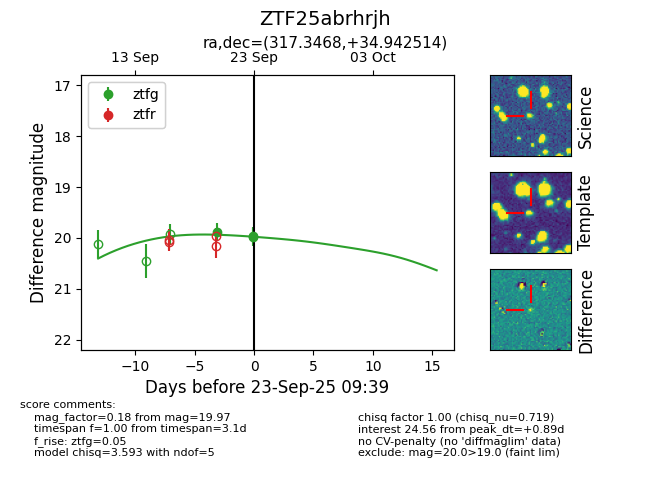
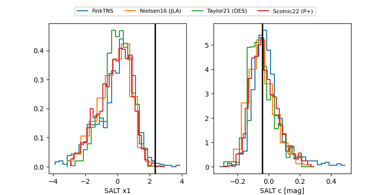

FINK: ZTF25abrhrjh
Lasair: ZTF25abrhrjh
ALeRCE: ZTF25abrhrjh
ZTF25abrhrjh (ztf,fink)
equatorial (ra, dec) = (317.3468,+34.94251)
galactic (l, b) = (79.8067,-8.73825)


last ztfg=19.97
3 ztfg detections